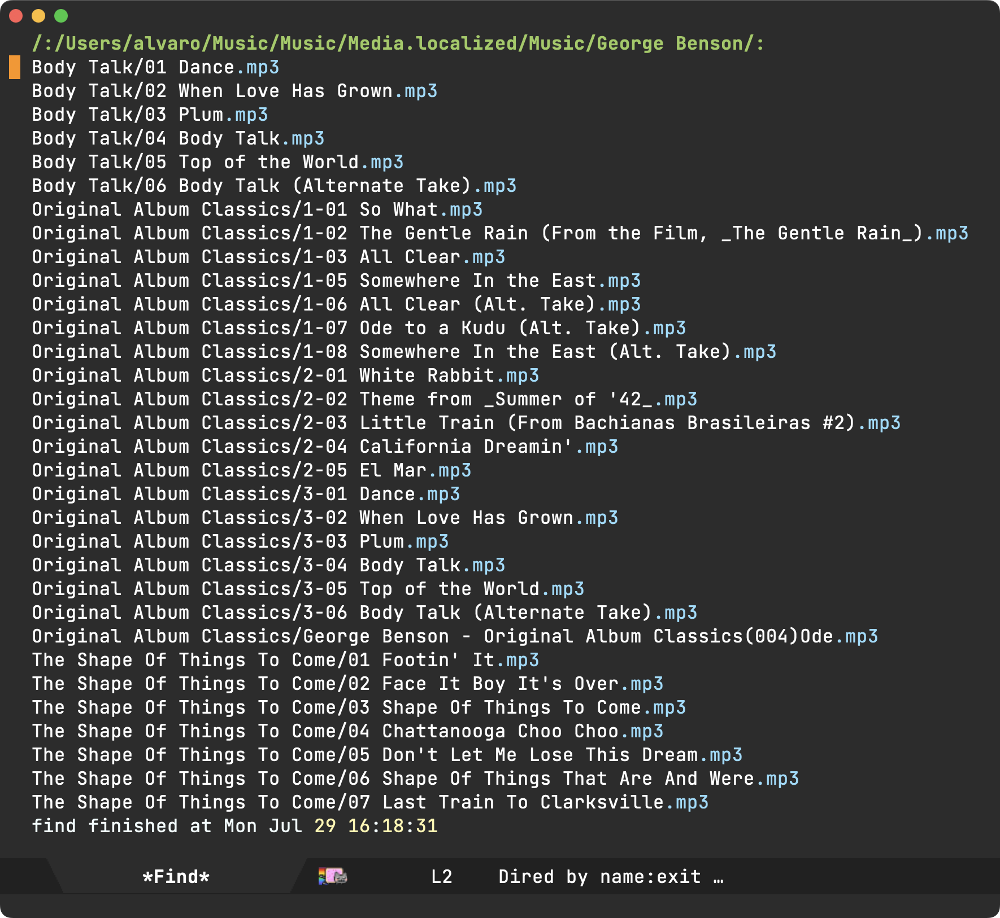
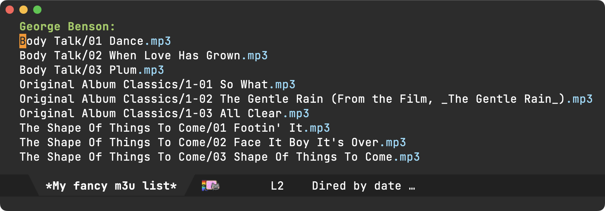

Álvaro Ramírez
The dired abstraction
I recently wrote about image-mode's next/previous item navigation, a feature I wanted to bring to ready player mode.
I was curious to see how image-mode resolved next and previous files, so I checked the associated keybinding (n) via helpful-key (my preferred alternative to describe-key), and landed on image-next-file. While this function only takes care of high-level routing, it led me to image-mode--next-file, which is where the actual next/previous file resolution happens:
(defun image-mode--next-file (file n) "Go to the next image file in the parent buffer of FILE. This is typically a Dired buffer, but may also be a tar/archive buffer. Return the next image file from that buffer. If N is negative, go to the previous file." ...)
While image-mode--next-file's implementation details are worth checking out, its docstring already highlights the bit I found most interesting: dired's involvement in the mix. I'm not sure why I initially found dired usage surprising. Buffers are Emacs's backbone. They are the fundamental structures holding the content we work with, whether it’s editing text, reading logs, displaying information, and many others including file management… Dired specializes buffers for this last purpose. While dired itself is a powerhouse, at its core it's just an ordered list of files.
Given a location within a dired buffer, we can use its helpers to find next and previous files. Like image-mode, ready-player now mirrors this approach (minus tar/archive handling). This got me thinking more about the dired abstraction… If it quacks like a duck, and walks like a duck, then it's probably errrm a dired buffer. What I actually mean is that associating a dired buffer to a ready-player buffer effectively attaches a playlist of sorts. It doesn't quite matter how this dired buffer was constructed. What's important is that it's recognized as a dired buffer, so all relevant helpers remain useful.
With dired buffers acting as media playlists, we can easily create a directory playlist by merely pointing dired to the current directory. This is the default behaviour in ready-player. When you open a media file, we attach a dired buffer pointing to the current directory. Play next or previous item, and you're effectively moving up and down the associated dired buffer.
Things get more interesting when we craft dired buffers in more creative ways than just supplying a path to a directory. One of my favourite commands is find-dired. It runs the find utility, crafting a dired buffer with its results.

For kicks, I added a ready-player-load-dired-playback-buffer command to ready-player, so we can just load any dired buffer, including our newly generated one, courtesy of find-dired.
With this generated buffer loaded and ready-player random playback enabled, we get to see our lucky jumps across find results.

At this point I thought "this is prolly as far as I'll take things"… ready-player was born to address quick access to media, typically from dired itself. For deep playlist handling, there are many other Emacs media players.
The thing is, with my newly found reusable dired abstraction, a rough m3u playlist experiment didn't seem that far-fetched at all. I'd need to read an m3u file and generate a dired buffer. I knew nothing about m3u's, other than being text files including media paths, along with optional metadata. I figured minimal m3u reading support shouldn't be too difficult.
If we are to create a playlist including the first three album tracks from the artist above, it'd look something like this:
#EXTM3U #EXTINF:-1,George Benson - Dance /absolute/path/to/Music/George Benson/Body Talk/01 Dance.mp3 #EXTINF:-1,George Benson - When Love Has Grown /absolute/path/to/Music/George Benson/Body Talk/02 When Love Has Grown.mp3 #EXTINF:-1,George Benson - Plum /absolute/path/to/Music/George Benson/Body Talk/03 Plum.mp3 #EXTINF:-1,George Benson - So What /absolute/path/to/Music/George Benson/Original Album Classics/1-01 So What.mp3 #EXTINF:-1,George Benson - The Gentle Rain /absolute/path/to/Music/George Benson/Original Album Classics/1-02 The Gentle Rain (From the Film, _The Gentle Rain_).mp3 #EXTINF:-1,George Benson - All Clear /absolute/path/to/Music/George Benson/Original Album Classics/1-03 All Clear.mp3 #EXTINF:-1,George Benson - Footin' It /absolute/path/to/Music/George Benson/The Shape Of Things To Come/01 Footin' It.mp3 #EXTINF:-1,George Benson - Face It Boy It's Over /absolute/path/to/Music/George Benson/The Shape Of Things To Come/02 Face It Boy It's Over.mp3 #EXTINF:-1,George Benson - Shape Of Things To Come /absolute/path/to/Music/George Benson/The Shape Of Things To Come/03 Shape Of Things To Come.mp3
A crude function to extract file paths into a list would look something like the following:
(defun ready-player--media-at-m3u-file (m3u-path) "Read m3u playlist at M3U-PATH and return files." (with-temp-buffer (insert-file-contents m3u-path) (let ((files)) (while (re-search-forward (rx bol (not (any "#" space)) (zero-or-more (not (any "\n"))) eol) nil t) (when (file-exists-p (match-string 0)) (push (match-string 0) files))) (nreverse files))))
Feeding our m3u file to our new function conveniently returns a list of found files:
("/absolute/path/to/Music/George Benson/Body Talk/01 Dance.mp3" "/absolute/path/to/Music/George Benson/Body Talk/02 When Love Has Grown.mp3" "/absolute/path/to/Music/George Benson/Body Talk/03 Plum.mp3" "/absolute/path/to/Music/George Benson/Original Album Classics/1-01 So What.mp3" "/absolute/path/to/Music/George Benson/Original Album Classics/1-02 The Gentle Rain (From the Film, _The Gentle Rain_).mp3" "/absolute/path/to/Music/George Benson/Original Album Classics/1-03 All Clear.mp3" "/absolute/path/to/Music/George Benson/The Shape Of Things To Come/01 Footin' It.mp3" "/absolute/path/to/Music/George Benson/The Shape Of Things To Come/02 Face It Boy It's Over.mp3" "/absolute/path/to/Music/George Benson/The Shape Of Things To Come/03 Shape Of Things To Come.mp3")
Next we need to create a dired buffer from a list of files. This is where I thought things would get trickier, but I was pleasantly surprised.
The dired docstring had the answer:
(defun dired (dirname &optional switches) "... If DIRNAME is a cons, its first element is taken as the directory name and the rest as an explicit list of files to make directory entries for. In this case, SWITCHES are applied to each of the files separately, and therefore switches that control the order of the files in the produced listing have no effect. ..." ...)
With that in mind, this is all it takes:
(let ((default-directory "/absolute/path/to/Music/George Benson")) (dired '("*My fancy m3u list*" "Body Talk/01 Dance.mp3" "Body Talk/02 When Love Has Grown.mp3" "Body Talk/03 Plum.mp3" "Original Album Classics/1-01 So What.mp3" "Original Album Classics/1-02 The Gentle Rain (From the Film, _The Gentle Rain_).mp3" "Original Album Classics/1-03 All Clear.mp3" "The Shape Of Things To Come/01 Footin' It.mp3" "The Shape Of Things To Come/02 Face It Boy It's Over.mp3" "The Shape Of Things To Come/03 Shape Of Things To Come.mp3")))
Here's the dired buffer to prove it:

We now have all the pieces. We can wire them up in a ready-player-load-m3u-playlist function.
From the previous snippet, you'd notice all file paths are relative to default-directory. While in the following snippet I use try-completion to find the longest common substring amongst the paths, I wonder if there's a more appropriate built-in function for this? I'd love to hear.
(defun ready-player-load-m3u-playlist () "Load an .m3u playlist." (interactive) (let* ((m3u-path (read-file-name "find m3u: " nil nil t nil (lambda (name) (or (string-match "\\.m3u\\'" name) (file-directory-p name))))) (media-files (if (string-match "\\.m3u\\'" m3u-path) (ready-player--media-at-m3u-file m3u-path) (error "Not a .m3u file"))) (default-directory (file-name-directory (try-completion "" media-files))) (m3u-fname (file-name-nondirectory m3u-path)) (dired-buffer-name (format "*%s*" m3u-fname)) (dired-buffer (dired (append (list dired-buffer-name) (mapcar (lambda (path) (file-relative-name path default-directory)) media-files))))) (ready-player-load-dired-playback-buffer dired-buffer)))
We're good to go now! Invoking M-x ready-player-load-m3u-playlist enables us to load our m3u playlist, automatically opening the first media file, and also navigate each song in the list one by one.

This was a really fun experiment. While dired is often used to manage files within a directory, its magic also extends to dired buffers crafted in more creative ways. find-dired and find-grep-dired are my two favourite built-ins. Are there other ones you like? Do tell.
Not long ago, I added ready-player-load-dired-playback-buffer to ready-player, but ready-player-load-m3u-playlist remains a local experiment (for now anyway). Let's see ;-)
Unrelated - Want your own blog?
Like this blog? Want to start a blog? Run your blog off a single file. Write from the comfort of your favourite text editor and drag and drop to the web. I'm launching a blogging service at lmno.lol. Looking for early adopters. Get in touch.